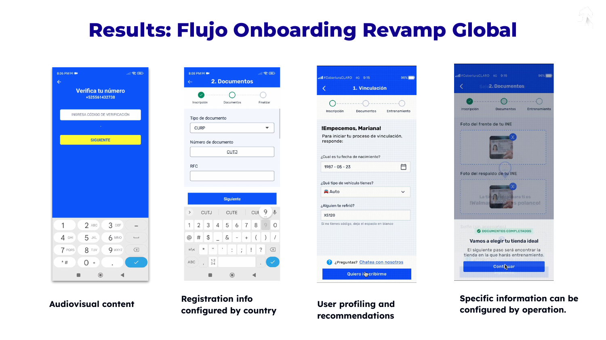
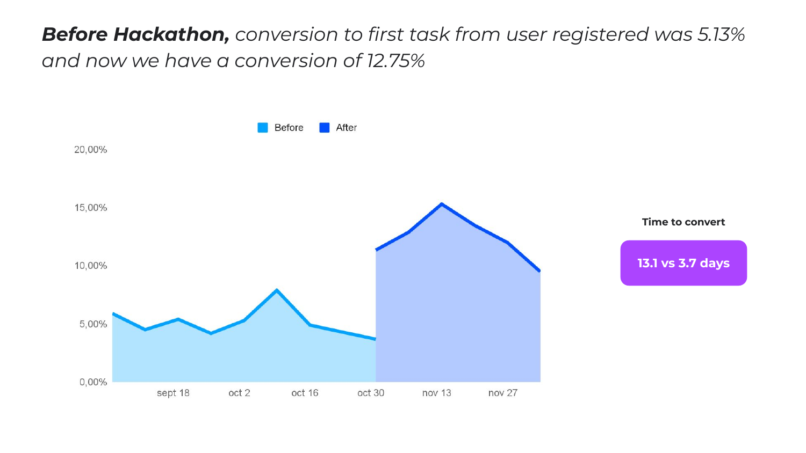

Onboarding
Revamp
How I redesigned Zubale's worker onboarding from scratch — using research, config tooling, and iterative testing to turn a confusing 14-step flow into a conversion machine that delivered 2.5x more activated workers in 72% less time.
Zubale · E-commerce ecosystem · LATAM
Getting workers to
their first task
in 12 hours
A cross-functional hackathon that redesigned how 500+ weekly leads register, train, and activate as Zubaleros — the gig workforce behind Walmart, OXXO, and Cencosud operations.
6
Countries — BR, MX, CO, CR, PE, CL
100+
Active clients — Walmart, OXXO, Cencosud
$70M
USD annualized revenue
The Problem
Fragmented, slow,
and losing users
Zubale's gig workers — "Zubaleros" — had to navigate a maze of channels just to register. WhatsApp agents, chatbot groups, web pages, the app, and SMS — each asking for the same information. The result: a conversion rate under 1% and a $200 CAC.
⚙️
Business pain
No single source of truth
Manual processes everywhere. The user acquisition team had no unified view — leads fell through the cracks constantly.
📉
Business pain
Under 1% conversion
$200 CAC and 5–10 days to convert made scaling unsustainable. Not enough supply to fulfill operations.
😵
User pain
Lost across channels
Users bounced between WhatsApp, chatbots, web pages and the app — all requesting the same documents repeatedly.
⏳
User pain
Days waiting for a reply
After submitting documents, users waited days for an agent to manually review and respond. Most dropped off.
+340Walmart stores across 32 cities in Mexico
500new leads per week needing onboarding
$200CAC before the revamp — unsustainable at scale
My Approach
A cross-functional
hackathon to solve it fast
Rather than a traditional design cycle, we ran a user acquisition hackathon — bringing together 7 teams in one room to define, prototype and test a solution in days. My role: moderate workshops, lead discovery, design wireframes and prototypes, and run user testing in the field.
7 teams,
one goal
Everyone from engineering to operations in the same room, aligned around a single north star: users earn their first 500 pesos within 12 hours of registering.
01Discovery
Moderate workshops & map the system
Led cross-functional workshops to map the full onboarding system — from first lead contact to first completed task. Identified all the fragmented touchpoints causing drop-off.
WorkshopsSystem mappingFigJam
02Design
Wireframe, prototype & benchmark
Benchmarked against Uber, Uber Eats and Lyft driver onboarding flows. Designed a single, guided app-first registration with monetary incentives built in.
FigmaPrototypingBenchmark
03Testing
User testing at store — in the real world
Ran in-store usability tests directly with real leads at Walmart. Conducted interviews and phone calls to understand where the 50% drop-off was happening and why.
Usability testingField researchPhone interviews
The Revamped Flow
Standardized,
configurable per country
The revamped onboarding could be configured per country, operation, and brand client — audiovisual content, document requirements, bonus amounts — all without engineering support.

Final app flow — registration · document upload · user profiling · operation matching
Results
Conversion more than
doubled after launch
Before
5.13%
Conversion to first task
13.1 days
Average time to convert
After
12.75%
Conversion to first task
3.7 days
Average time to convert

Conversion rate over time — before and after the onboarding revamp
Impact summary
What we
achieved
📈
2.5x conversion increase
From 5.13% to 12.75% conversion to first task — in weeks, not quarters.
⚡
72% faster time to convert
From 13.1 days to 3.7 days — workers reached their first task 3.5x faster.
📱
Single source of truth
All onboarding consolidated in the app — no more fragmented channels or manual work.
⚙️
Configurable per operation
Operations can configure onboarding per brand and country — zero engineering needed.
"2 out of 3 users now completing the full onboarding — up from less than 1 in 20 before the revamp."
Post-launch testing results · Zubale · 2022